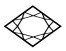
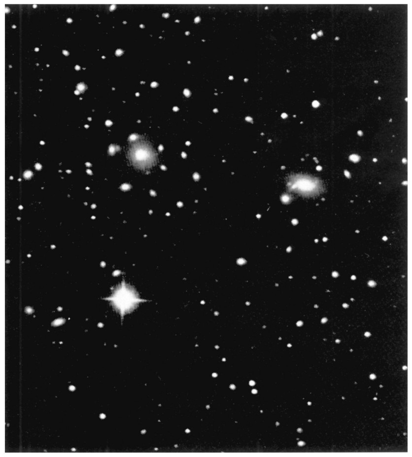
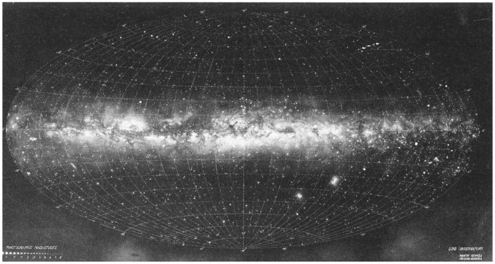

第三章人 物
牛顿——剑桥大学自然哲学教授
爱因斯坦——伯尔尼瑞士专利局的职员
哈勒尔——伯尔尼大学理论物理学教授
地 点
英国剑桥
瑞士伯尔尼，在此处第一次推导出方程E=mc 2
瑞士日内瓦附近的CERN（欧洲核子研究中心）
在公园休息后不久，我便返回三一学院；更确切地说，我跑回来就好像有个重要约会似的。有些东西把我拉回到牛顿工作过的地方；但我并不知道究竟是什么。我再一次来到了学院的主门，再一次遇到了这个中年男子，这一次他一点也不匆忙；他停下来好奇地看着我。
“刚才我在这儿见过你，”他说，“你是特意在寻找什么吗？我能帮上忙吗？”
我实际上是在寻找牛顿，这种寻找完全是荒唐的，哪个精神正常的人会寻找一位250年前就去世了的科学家呢？想到这些我就忍不住笑了。我迅速地答道：“我并没特意在找什么。我只是想四处看看。我一直想看一看牛顿曾经工作过的地方，今天终于有了机会。”
“我猜你是位物理学家。”这个人一边说一边仔细地打量着我。
“你说对了。你不会相信，但我确实是在找些东西，或者更确切地说，是在找某个人；我在寻找牛顿。”
我对自己的回答感到惊讶，这简直坦白得近乎荒唐；而且，同样令我惊讶的是，问话者却把这看得相当平常。他温和地笑着说：“你不必再找了，我就是 牛顿。”
在那个时刻，我认出了他。站在我面前的确实就是他：牛顿，正是写《原理》时期40岁上下的男子；正是我从内勒的画像中认识的牛顿。他的头发变短了，并没戴假发，而且还穿着现代服装。一个毫无疑心的观察者可能会把他当作20世纪三一学院的一位教师。
同时，我对自己也感到惊奇：我居然把过去存在过的最伟大的科学家之一的突然出现视为理所当然。更有甚者，他的举止就好像不是牛顿，而是一名普通的大学教师站在我面前一样。因此我自我介绍：“阿德里安·哈勒尔，伯尔尼大学物理学教授。”
遇到一位来自欧洲大陆的同事，牛顿看来很高兴，他继续说道：“我认为我应该向你道歉。在三一学院这里见到我你可能很吃惊。毕竟，从我在这里工作时算起至今已将近300年了。”
我点点头，举止就好像在剑桥找到牛顿是地球上最自然的事情了。我很惊讶，他对我是那么友好，甚至是友善的。在他那个时代，他有孤傲的名声，即使是同事也很难和他接近。显然，从那时以来他有了变化，而且这对他没有坏处。
“几天前我获得机会访问我曾经工作过的地方，”牛顿说，“从那时起我就一直呆在剑桥。如你所能想象的，许多事情对我来说都是新鲜的，街道上的交通、学院房间里明亮的灯，我想你们现代人称之为电灯。还有前面带一块弧形玻璃的能使图像动起来的奇怪装置，你们称之为电视机。我现在已经逐渐习惯了这些东西。我花了大部分时间在图书馆里，努力去了解我曾经从事过的自然科学中发生了什么事情。必须承认，我有很严重的问题。我所读的现代物理学教科书中的许多东西我都不明白。”
我插话说：“这不奇怪，从你的《原理》出版以来的3个世纪中，科学领域已经发生了许多事情，物理学也不例外。19世纪末发现的原子物理学中的新现象没法再用你的力学来理解了。必须发展新的理论，特别是相对论和量子力学理论。”
“又是它，在看书时你们称为相对论的这个概念我已遇上了好几次。”牛顿大叫道，“这个理论究竟是什么东西？需要认真对待吗？也许你可以告诉我有关它的更多东西？就在昨天晚上，我还试着从所找到的几本教科书中的一些简短评述中搞清它的意思，但恐怕我并没那么幸运。不过，有一件事情我很清楚，这个奇怪的理论并不接受我的绝对空间的概念。”
我，一个每天都要面对自己的学科难题的20世纪末的物理学家，该如何去回答呢？我怎么能拒绝牛顿的要求呢？毕竟，这可能是了解这位非凡的天才的思路及其能力的唯一机会。
“好吧，”我说，“我提议我们一起弄清相对论的最重要的方面。可是你必须答应我一件事。你曾经研究过力学的基础，那是技术的主要动力；我也想借我们会面之便，能对你的思想世界有所了解。我建议我们来系统地考虑在20世纪期间所发现的与相对论有关的物理现象。但这会需要一些时间，也许要用几天时间。你能花多少时间呢？”
牛顿答道：“我的时间并不紧。唯一让我犹豫的是那样做会占用你太多的时间。300年前我在剑桥这儿搞研究时我有的是时间。几天根本就不算什么。不过，事情似乎有了变化。我有种印象，在这个年代里，几乎没有人有足够的时间并非肤浅而是更加深入一些地去思考一些事情。”
“实际上，我是在去美国开会的途中，”我答道，“但如果有机会能和牛顿一起呆几天，我会让我的同事们去开会，而我自己就留在这里。”
牛顿非常高兴听到更多有关的话题，即关于他并非刚愎自用地称之为牛顿的自然科学的继续发展。他同意留出接下来的几天，以便我们能对此进行讨论。
那天上午我和牛顿都没有其他安排，所以我们当场就开始了讨论。我们决定从我给牛顿介绍力学基础的当今见解开始，这似乎是多此一举，因为我们的观点仍然是以牛顿本人的贡献为基础的。因此，我在这方面没花多少时间，就转而讨论绝对空间的概念。在适当的时候，牛顿概括了我的一些论点。
牛顿： 如果我理解得正确的话，你主张的是有可能在空间任何一点和任意时刻引入一个坐标系并称之为惯性系。根据该系统能使有质量的物体像任何不受外力作用的物体应有的那样保持沿直线轨迹运动的性质来定义这个系统。如果我们定义了一个这样的系统，那么我们就可以推断出有无穷多个另外的系统，它们相对于第一个系统会以任意速度做匀速直线运动。
另一方面，如果第二个坐标系相对第一个是旋转的，那么第二个坐标系就不是惯性系。在第二个系统中，自由运动的物体就不是沿直线而是沿曲线轨迹运动。那种轨迹是由于该系统的旋转而产生的。这是惯性系统与旋转系统的根本差别。这些在我的《原理》中详细地谈过了。类似的观点也适用于沿任意方向加速的参考系。
我一直深信，当一辆马车——或者你愿意说一辆汽车也行——突然减速时，我们所体会到的那种惯性力必定与空间的结构有联系。速度总是相对的，但加速度是绝对的，而且不取决于参考系。然而，如果不存在能提供绝对框架的空间，一个物体的加速度又怎么能确定是绝对的呢？
类似地，旋转系统与惯性系统必定存在着某种差别。在我看来，差别就在空间结构本身。空间以及时间才是物质被从空间移走之后所留下来的东西。
哈勒尔： 你能肯定物质被从空间移走后还留下了什么东西 吗？
牛顿： 当然，至少留下了两样东西——空间和时间。［显然，牛顿不打算容忍对他的空间和时间思想的任何反对。］在创世之初，上帝创造了世界；他是在空间和时间之中创造的；更准确地说，他是在绝对空间和绝对时间之中创造的。对我来说，空间和时间二者都是绝对的、尽善尽美的东西，是神圣的东西。它们就像上帝本身一样是绝对的。另一方面，我们并非存在于一个自由空间里；由于受到我们称之为地球的这个旋转行星的约束，我们永远也不能完全体验绝对空间，即由意味着绝对静止的坐标系所定义的空间。我们只能取近似。
由钟表测量的时间绝不是绝对时间。我们测量时间的方法只是对它进行不完全的描述。在《原理》中我写道：“绝对空间鉴于其真正本性而保持不变和不动，并且不取决于什么外部物体。相对空间的存在与前者有关，我们的感觉是按照它相对于其他物体的位置来对它进行定义的，而且，我们通常认为空间是静止的；相对空间在与静止空间相比较时可能是运动的。”在我看来，所有物体都在空间中运动，但空间却仍然不受影响且无所改变，这个事实给出了绝对空间的肯定的证据。它是上帝嵌入所有物质的支架。
对时间也有类似的论点。我们每个人对时间如何流逝都有不同的看法，它可以像箭一样飞逝，或是像蠕虫一样爬行。幸运的是，时钟帮助我们避免了这种不确定性。可是，不论我们怎么测量，我们都只能得到绝对的、真正的时间的一个模糊的图像。从它的真正本质上讲，绝对时间是均匀流逝的；它与外部物体或者空间中存在的任何物质都没有关系。
时间就像宽阔的河流中流动的水；单个事件就像水面上的碎木片，一出现就会被水流推动着向前走。绝对时间之河无情地向前流动；它把将来变成现在，然后再抛弃现在让它成为过去。
年轻时我花了很多时间深入地思考时间。没有什么东西像时间这样既简单又复杂。每个人都生活在时间之中，感觉着时间是如何消逝的。没有时间，我们的存在是不可思议的。可是，如果你要问时间的本质到底是什么，没人能给出令人满意的答案。也许不存在这种答案。
我认为时间像空间一样，是上帝嵌入物质的支架。恒星和行星可以消失，可时间却保持不变。它无始无终。在整个宇宙中，不论是这里的地球还是在遥远的星系，绝对时间总是相同的。上帝给予我们的时间像一条链子，它把我们与最遥远的太空连接起来。
牛顿几乎是恳切地讲完最后的话。我感觉到，他不是极力要说服我而是要说服他自己。我们一边讨论一边在学院的四方院中兜圈，最后在喷泉的台阶上坐下来。我的对话者想必已经知道我是心存疑虑地在听他讲话。
牛顿 （有点激动地）：你怀疑我吗？我承认只有经过斗争我才决定仅仅通过参考绝对空间和绝对时间来定义空间和时间。用这种方法我们避免了许多困难。但是，我担心那只是一个假设。我没法证明它。可是，看来成功最终证明我是对的。
哈勒尔： 是，也不是。就我而言，我可以与你的不带绝对空间假定的力学共存。
牛顿： 但是，你怎么去理解惯性系与旋转参考系之间的差别呢？
哈勒尔： 我在伯尔尼是这样给学生们讲的：如果我处于旋转参考系（比如说一个旋转盘子）中，我可以轻而易举地证实旋转：在某种程度上，我看到我周围的东西绕着我旋转。
如果我在远离地球的外层空间运动，我也同样可以做到这点。如果我的宇宙飞船旋转，我就会看到苍穹围绕着我旋转；我因而认识到：“嘿，我的参考系在旋转，我不是在惯性系里。”在这个例子中，苍穹给了观察者说出旋转与非旋转之差别的方法。类似地，甚至不提到绝对空间我们也可以证实地球的旋转。
牛顿： 大致说来我同意你的观点。绝对空间可能与恒星和外层空间中巨大的质量有关。
恒星实际上是固定在它们的天体结构中，因此表面上是不动的，难道这不奇怪吗？可是，为什么不该如此呢？在现实中，这些恒星中的一些是处于相当快速的运动之中的，但我们看不到相应的运动，因为它们离得太远了。然而，即使是非常远的恒星，如果它运动得足够快，我们也能用肉眼注意到它在夜空中的运动。因此，只有存在这样一个基本原理，即不论恒星是多么遥远，都可以对它们的运动速度强加一个限制，这样才能理解恒星表面上不动的原因。只有那样一个原理才能确保运动表面上的静止。
有这样的原理吗？如果有，我就准备放弃绝对空间，并提出恒星是近似静止的原理。
我迷惑了，牛顿讲了这么多话之后，竟会这么快就放弃他的绝对空间的思想。我答道：“你说得对。真令人吃惊，恒星抑或更遥远的恒星系……”

图3.1 后发座星系团的中心。在这里能看到的只是其两千多个星系中很少的一部分。从后发座方向看，它们距离地球约500光年。原则上，这些星系可以快速地彼此穿梭运动，就像一群蚊子；实际上，它们的相对运动是缓慢的。因此，我们可以定义一个坐标系，其中星系总体上讲是静止的。这样的坐标系可以看作惯性坐标系。如果牛顿是比如说后发座星系团中一个星系中某颗行星上的居民，他可能会把这个特殊的系统解释为他的“绝对空间”。
“你是说星系吗？”牛顿微笑着打断了我，“你看，我已经充分利用了我在剑桥的时间，学了不少现代天文学和天体物理学的东西。”
我继续说：“星系并不是疯狂地在空间高速运动，难道这不奇怪吗？现在我们知道它们是以文明的、几近高雅的方式穿行于空间。比如，我们所在的银河系与离得最近的仙女座星系彼此在朝对方运动但相对较慢，只是每秒几千米。”
“在我看来，我们在这里所观察到的宇宙运动的这种规律并不是偶然的，”牛顿说道，“我想象这会与绝对空间有关。它甚至与绝对空间是完全一致的。”
我希望避免在绝对空间的原理问题上迷失于毫无结果的讨论。“我基本上同意你最后的推测。在宇宙中我们观察到，星系在有规律地运动，而不是疯狂地沿着杂乱无章的轨道横穿空间。这个宇宙比无偏见的观察者所猜测的更有序。因此，使用一个能简单地解释这些运动的坐标系是合理的。使用所有星系都围绕一个中心点运转的系统，以及定义我们这颗在旋转的行星即地球就是那个中心点，这些都没有什么意义。”
“对地球上的我们来说，所有星系与太阳一样24小时完成一次旋转。当然，这个周期与星系无关而只与我们这颗不大的行星有关。天文学家早就认识到这一点了。这就是为什么他们提出银河系的运动与由我们星系确定的一个坐标系有关，而且在我们星系中心有它的原点的原因。就我而言，我们可以把这个系统确认为绝对空间，这么做更是因为，用那种系统相当容易解释其他星系的运动，因为相对于我们自己的星系，它们运动缓慢。”
“让我们先从认同绝对空间的定义开始吧，即使对你们来说这看起来有点儿太唯象了，而且当然不触及宗教方面。很快就会清楚，全新的问题出现在相对论中；它们迫使我们重新审视空间的概念。”
我认识到我对待牛顿并不宽容，我正对他的力学世界观的实质方面表示怀疑。但是牛顿急切地想了解关于相对论的更多东西，因此他决定不再争论了。实际上，他本人建议我们应该马上讨论新理论。

图3.2 我们银河系的全景图［伦德马克（K. Lundmark）根据详细的照片记录合成的图］。左边是银河系的御夫座、英仙座、仙后座和天鹅座。从地球上观察，银河系的中心是人马座。右边，银河系延伸穿过半人马座、南十字座、船底座、船尾座和大犬座，这些星座只能从南半球看到。右下方，我们看到两块麦哲伦星云；这些小星系是我们的卫星。1987年2月，一颗超新星在大麦哲伦星云爆发。
银河的坐标系定义为它的原点与银河系中心一致。（承蒙瑞典隆德的隆德观测站惠允。）
可是时间在流逝着，我们都同意把物理问题暂搁一边，先到附近的小店吃午饭。
午餐期间，我们谈论了很多牛顿显然很感兴趣的东西。他对我讲述的第一次登月着了迷，而且还想了解现代太空研究的一些事情。离开小店时我们都处于最佳状态。我们俩没人想继续物理学的对话，而是代之以享受信步穿过剑桥的乐趣。